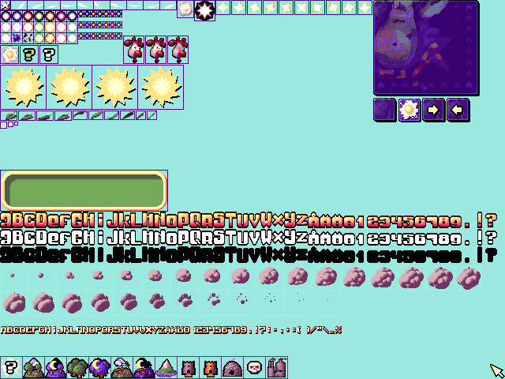

<canvas></canvas>


<script type="text/javascript">

    //    const $img = document.querySelector('img');
    //
    //    const $canvas = document.querySelector('canvas');
    //    const ctx = $canvas.getContext('2d');
    //
    //    ctx.drawImage($img,0,0);
    //    const dt = ctx.getImageData(0,0,$img.width,$img.height);
    // //rgb(155, 232, 223)
    //    for (let i=0;i<dt.data.length;i+=4) {
    //       //const v = dt.data[i + 3] = 255;
    //       if (dt.data[i] ==155 && dt.data[i+1] ==232 && dt.data[i + 2] == 224 ){
    //          dt.data[i+3] = 0;
    //       }
    //    }
    //
    //    $canvas.width = $canvas.width;
    //    ctx.putImageData(dt,0,0);

    window.addEventListener('gamepadconnected', function (e) {
        var gp = navigator.getGamepads()[e.gamepad.index];
        console.log('Gamepad connected at index %d: %s. %d buttons, %d axes.',
            gp.index, gp.id,
            gp.buttons.length, gp.axes.length);
        console.log(gp);
    });

</script>
